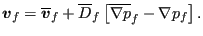

Keyword type: model definition, material
With this option the specific heat of a solid material can be defined. The specific heat is required for a transient heat transfer analysis (*HEAT TRANSFER or *COUPLED TEMPERATURE-DISPLACEMENT). The specific heat can be temperature dependent.
This option should not be used to define the specific heat of a fluid (gas or liquid) in an aerodynamic or fluid dynamic network. For the latter purpose the keyword *FLUID CONSTANTS is available.
First line:
Following line:
Example: *SPECIFIC HEAT 446.E6
defines a specific heat with value  for all temperatures.
Example files: beamth, beamhtcr.